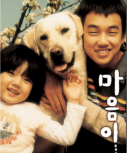

| 포스터 | 글 |
|---|---|
|
 ▪출처: ㈜화인웍스(2006), 『마음이』, ㈜화인웍스. |
이 영화 포스터를 보면서 예전에 우리 집에서 키웠던 진돌이가 떠올랐다. 진돌이를 데리고 공원에서 연날리기를 하며 즐겁게 놀던 것이 생각난다. 하지만 키우기 힘들어서 진돌이를 시골 할머니 댁으로 떠나보낼 때는 며칠 동안 엄청 울었다. 지금도 진돌이가 보고 싶다. 또 예전에 본 동화책 『하얀 마음 백구』가 생각났다. 이 영화 포스터를 보니 남매가 강아지를 키우면서 있었던 일을 다룬 영화인 것 같다. 아마도 개의 이름이 마음이인 것 같은데, 하늘이 보내 준 최고의 선물이라는 표현을 보니 마음이라는 개와 가족같이 지내는 이야기인 것 같다. 포스터만 보고 있어도 참 마음이 따뜻해진다는 느낌을 받았다. |